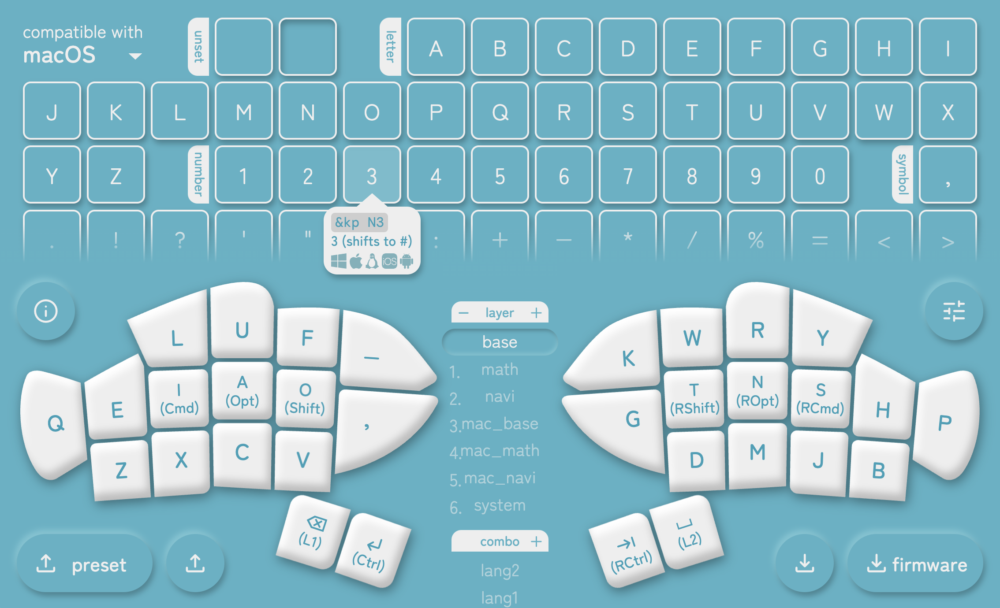
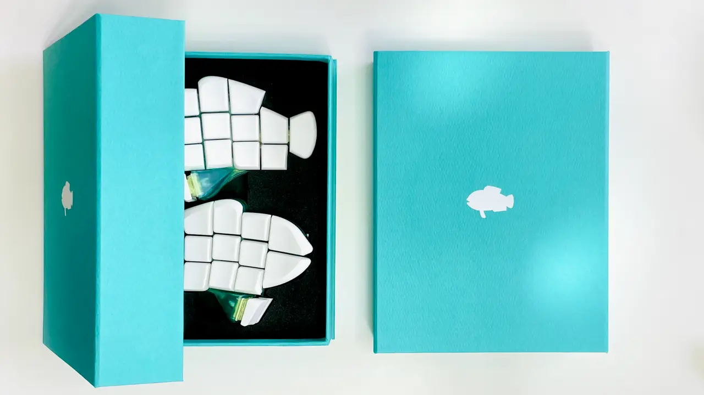
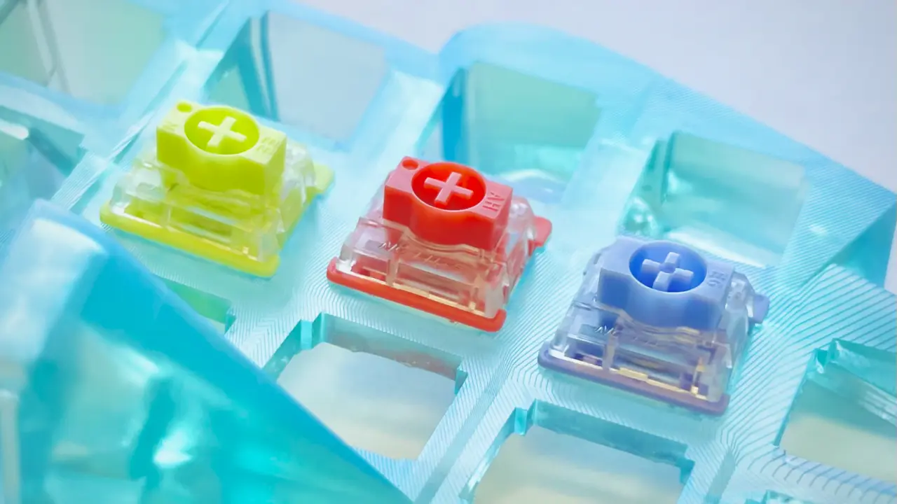

タイピングを
諦めないで。
かわいい見た目とは裏腹に、これは実用的なキーボードです。 エルゴノミクスを極めた3D配列に、パワフルな完全無線接続。 ミニマルで覚えやすいキーマップは、書き換えも自由自在です。 タッチタイピングに苦戦する学生に、肩こりや腱鞘炎に悩む仕事人に。 自作キーボード文化の粋を集めた〈規格外〉の選択肢を贈ります。
今すぐ買うopen_in_new 胸を張って使おう。
おさかなキーボードは左右分割タイプ。 両腕を好きなだけ開いて、肩や手首に負担のない自然な姿勢で作業できます。
Let's SplitやCorne、Moonlanderに代表される左右分割は自作キーボード文化の象徴的なアイキャッチとなって、作家やエンジニアを中心に愛好者を増やしてきました。医学的な裏付けはまだ不足していますが、合間にメモや飲み物を置きながらパワーポーズで作業できる優雅さは、多くの使用者が口を揃える魅力です。

見る１打より、見ない２打。
おさかなキーボードには、左右合わせて32キーしかありません。 でもレイヤー機能を使えば、普通のキーボードにある全ての、あるいはそれ以上のキーが入るんです。 BackSpaceも矢印も、目線や手首はそのままで。
自作キーボードでは当たり前になったレイヤー・ホールドタップ・コンボによる物理キー数の削減も、国内では40~50キーを実用的な下限とする向きがあります。しかし、100種あまりの一般的なコードを入れるのに２つのMOキーを用いた４レイヤー構成が必要になるのは30キーでも50キーでも同じことであり、小指・親指キーを自然な可動域から溢れさせながらエルゴを標榜するのは無理があります。26のアルファベットに2つのパンクチュエーション、4つのホワイトスペース。32キーこそ、キーボードのゴッズナンバーです。
手が惚れる曲面。
なめらかに窪んだキー配列に、垂直な親指キー。 統合設計された鞍型キーキャップに、日本人好みのキー間隔。 手指の可動域に寄り添って無数の試作を勝ち抜いた、斬新なのに手に馴染むかたちです。
自作キーボードのジャーゴンをご存じで？話が早い。これはロープロファイルなメカニカルスイッチを用いた左右分割30%キーボードで、テント・ティルトしたコンケイヴでカラムスタッガードなキーウェルに仄かなスプレイとステップ・スカルプチャーを潜ませました。DygmaのShortcutを蘇生するフィンガーグリッドの脱構築に、Colosseumを振り切るサムクラスターの倒立。それでいてパームレストを前提にしないタイトなパッキングや指列間のシームレスさからは、Dactylと袂を分かつ認知負荷への配慮が垣間見えます。大胆さと神経質さ、ロマンとモダンが調和した、立体キーボードのひとつのバランスポイントです。
あなただけの配列で。
すべてのキーは完全にプログラマブル。 専用のエディターを使えば、誰でも視覚的にキーマップを編集できます。 デフォルトの大西配列をはじめとする選択的配列や、複雑なショートカットも自由自在。
QMK FirmwareにおけるRemapやVIAは、プログラマブルキーボードのうまみを一般に普及するための重要なインフラになっています。後発のZMKはリアルタイムリマップを「計画段階」としており簡便なアプリケーションが存在しないのが現状ですが、キーマップの記述だけでもGUIで完結させることで非エンジニアの障壁を可能な限り下げました。互換OSのフィルターを備えた一覧性の高いコードリストや、SVGを用いた非矩形のキーシェイプの再現など、専用ツールだからこそのUIへのこだわりも感じてください。
スイスイ、どこへでも。
手のひらサイズの筐体は、限られたデスクの面積を奪いません。 完全無線接続だから、煩わしいケーブルも不要。 約500時間持つバッテリーは、USB Type-Cで充電できます。 丈夫な外箱をそのままケースにして、どこへでも連れて行きましょう。
自作キーボードの文脈では、そもそも組み立て不要の完成品販売であることを明言しなければいけないかもしれません。はんだごてや別売りの部品は不要。箱から出して電源スイッチを入れるだけで、すぐに使い始められます。美しさと強度を兼ね備えた貼り箱のパッケージは、佐賀県有田の町工場・一新堂の特製です。

最強の心臓。
おさかなを駆動するのは、次世代のキーボードファームウェア・ZMK。 Bluetoothで最大５機器とペアリングでき、そのスピードは無線であることを忘れるほど。 有線接続もゲーミング水準の速さです。
自作キーボードの主流であるQMK Firmwareが有線接続を前提にしているのに対し、ZMKは無線接続を第一にローレヴェルから最適化されたオープンソースな新興ファームウェアです。第三者の計測によれば、ZMKの無線の通信速度は一般的な有線キーボードに引けを取らず、ポーリングレート1000Hzの有線接続では一般的なゲーミングキーボードを凌駕するほどです。
推しの押し心地で。
キースイッチは、感触の異なる３種類から選べます。
ライトリニア
37gfでなめらかに沈む若草色のスイッチです。スッと押せる軽さが疲れにくく、長時間の執筆・コーディングに最適です。
リニア
45gfでなめらかに沈む紅色のスイッチです。入力発火点が1.2mmと浅く、一瞬を争うゲームやタイピング競技に最適です。
タクタイル
55gfでカクッというさりげない入力感のある藤色のスイッチです。ミスタイプをしにくく、タイピングの学習に最適です。
上品な打鍵感と高い信頼性に定評のあるGateron社製のLow-plofile 2.0スイッチをベースに、気鋭のカジュアルキーボードスタジオNuphyがチューンした2023年のコレクションからAloe、Cowberry、Wisteriaを採用。互換性が低く自作キーボードではあまり使われないスイッチですが、ロープロファイルとは思えない打鍵感・打鍵音の心地よさはクチコミが物語っています。個体差の大きいラインでもありますが、組み立て時に音や重さを比べて最良の位置に嵌めています。
Q & A
キーに印字はないの？
ありません。視覚に頼らずに打鍵されること、人や時期によって異なる配列で使われることを前提にしているからです。
ホーミングキーはないの？
ありません。なくても握る感覚でホームポジションがわかるからです。
電飾はないの？
ありません。必要なバッテリー容量が数十倍になるからです。
なんでこんなに高いの？
工芸品だからです。材料費で１万円を超えるうえ、3Dプリント・真鍮の切削から組み立てまでを一つひとつ手作業で行っています。
キースイッチは換装できる？
構造上、ホットスワップには対応していません。Gateron社は5000万回以上の打鍵耐久性を謳っており、修理対応もいたしますのでご安心ください。
QWERTY配列でも使える？
もちろんです。ただし、3x10のグリッドがそのままは収まらないので、一部をずらすか親指で打つ必要があります。また、本品のような標準運指を強要するキーボードにおいては特に、指の移動距離や同じ指の連続が考えられていない配列は推奨されません。
技術的仕様
| 寸法・重量（片機） | 幅122mm x 奥83mm x 高さ38mm・164g |
| 寸法・重量（箱入） | 幅151mm x 奥193mm x 高さ47mm・540g |
| 表面材質 | 樹脂（ボディ・キーキャップ）、真鍮（ボトムプレート） ※樹脂はISO 10993-10水準の皮膚テストをクリア済 ※真鍮はクリアコート済 |
| 接続方法 | 無線（Bluetooth Low Energy）または有線（USB Type-C） |
| バッテリー | 3.7V／400mAh |
| 通信間隔 | 1ms（USB）／ 7.5ms（Bluetooth） ※入力遅延の平均は2で割って処理・通信時間を加えたものになる ※子機はBluetoothで親機を経由するため平均3.75ms追加 |
| 技適認証 |  |
特定商取引法に基づく表記
| 引き渡し時期 | 注文から通常２〜３日以内に発送します。 |
| キャンセル・返品・交換 | 注文確定後のキャンセル・返品は受け付けませんが、キースイッチが注文と違った場合・機能的な初期不良があった場合は無料で交換します。 また、使用開始後の故障も有料で修理を承ります。 |
| 商品価格／それ以外の料金 | 29,700円／配送料（国内一律700円） |
| 支払い方法／支払い時期 | クレジットカード決済／ご注文時に確定 |
| 販売者／責任者 | 合同会社O24／大西 拓磨 |
| メールアドレス | support@o24.works |
| 所在地 | 〒151-0064 東京都渋谷区上原1-41-20 SU14120 204 |
| 電話番号 | 請求があれば遅滞なく開示いたします。 |
個人情報保護方針
注文時にご入力いただく個人情報は、当該商品の配送のためだけに使用します。詳しくはこちらをご覧ください。